pacman::p_load(sf, terra, spatstat,tmap, rvest, tidyverse)Hands-on 2.b: 2nd Order Spatial Point Patterns Analysis Methods
1 Overview
Second-order spatial point pattern analysis examines the spatial relationships between points in a pattern, specifically focusing on how the presence of one point influences the location of others (eg. 7-11 and Family Marts always open near to each other for the traffics). It goes beyond simply describing the overall density of points (first-order effects) by investigating clustering, dispersion, or randomness at various spatial scales.
Using appropriate functions of spatstat, this hands-on exercise aims to discover the spatial point processes of childecare centres in Singapore.
The specific questions we would like to answer are as follows:
are the childcare centres in Singapore randomly distributed throughout the country?
if the answer is not, then the next logical question is where are the locations with higher concentration of childcare centres?
2 The Data
The data we used is the same as Hands-on Ex2-1:
- Child Care Services data from data.gov.sg, a point feature data providing both location and attribute information of childcare centres.
- Master Plan 2019 Subzone Boundary (No Sea), a polygon feature data providing information of URA 2019 Master Plan Planning Subzone boundary data.
3 Import Libraries
| Library | Desc |
|---|---|
| sf | handling geospatial data |
| tmap | visualization for geospatial data |
| tidyverse | handling data including packages readr, tidyr and dplyr |
| rvest | scraping (or harvesting) data from html and web pages |
| spatstat | for point pattern analysis |
| terra | a modern spatial data analysis package to replace the raster package. terra provides functionalities for creating, reading, manipulating, and writing raster and vector data, and it’s built on top of GDAL and PROJ libraries for enhanced performance |
4 Import Data
mpsz_cl <- read_rds("Data/geospatial/mpsz_cl.rds")
childcare_sf <- st_read("Data/geospatial/ChildCareServices.kml")%>%
st_zm(drop = TRUE, what='ZM') %>%
st_transform(crs = 3414)Reading layer `CHILDCARE' from data source
`/Users/johsuan/johsuanh/ISSS626-GAA/Hands-on/Hands-on-Ex02/Data/geospatial/ChildCareServices.kml'
using driver `KML'
Simple feature collection with 1925 features and 2 fields
Geometry type: POINT
Dimension: XYZ
Bounding box: xmin: 103.6878 ymin: 1.247759 xmax: 103.9897 ymax: 1.462134
z_range: zmin: 0 zmax: 0
Geodetic CRS: WGS 84st_geometry(childcare_sf)Geometry set for 1925 features
Geometry type: POINT
Dimension: XY
Bounding box: xmin: 11810.03 ymin: 25596.33 xmax: 45404.24 ymax: 49300.88
Projected CRS: SVY21 / Singapore TM
First 5 geometries:childcare_ppp <- as.ppp(childcare_sf) %>%
rjitter(retry = TRUE,
nsim = 1,
drop = TRUE) #disperse overlapping pointspg <- mpsz_cl %>%
filter(PLN_AREA_N == "PUNGGOL")
tm <- mpsz_cl %>%
filter(PLN_AREA_N == "TAMPINES")
ck <- mpsz_cl %>%
filter(PLN_AREA_N == "CHOA CHU KANG")
jw <- mpsz_cl %>%
filter(PLN_AREA_N == "JURONG WEST")pg_owin = as.owin(pg)
tm_owin = as.owin(tm)
ck_owin = as.owin(ck)
jw_owin = as.owin(jw)childcare_pg_ppp = childcare_ppp[pg_owin]
childcare_tm_ppp = childcare_ppp[tm_owin]
childcare_ck_ppp = childcare_ppp[ck_owin]
childcare_jw_ppp = childcare_ppp[jw_owin]childcare_pg_ppp_km = rescale.ppp(childcare_pg_ppp,1000,"km")
childcare_tm_ppp_km = rescale.ppp(childcare_tm_ppp,1000,"km")
childcare_ck_ppp_km = rescale.ppp(childcare_ck_ppp,1000,"km")
childcare_jw_ppp_km = rescale.ppp(childcare_jw_ppp,1000,"km")par(bg="#f6f6f6",mfrow=c(2,2))
plot(unmark(childcare_pg_ppp_km),
main="Punggol")
plot(unmark(childcare_tm_ppp_km),
main="Tampines")
plot(unmark(childcare_ck_ppp_km),
main="Choa Chu Kang")
plot(unmark(childcare_jw_ppp_km),
main="Jurong West")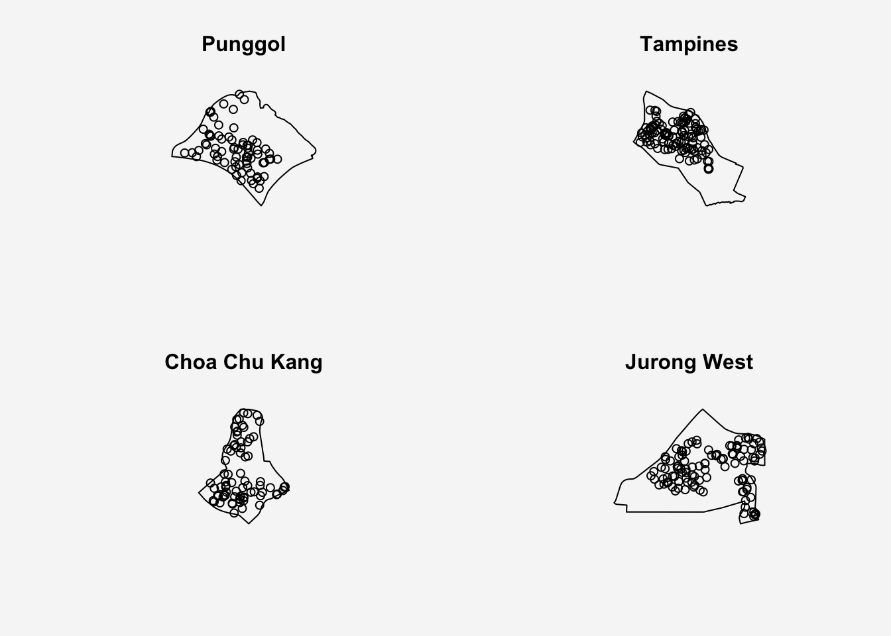
5 Second-order Spatial Point Patterns Analysis
In this exercise, we will use four functions to analyze the spatial point patterns:
| Function | Focus Type | What It Measures | Analogy / Example | Remark |
|---|---|---|---|---|
Nearest Neighbor Distance |
Local | Distance from a point to its nearest neighbor | For each childcare centre, how far is the nearest other centre? |
|
Empty Space Function |
Local | Distance from random spot to nearest point | From random locations in the city, how far is it to the nearest childcare centre? |
|
Ripley’s K Function |
Global | Counts how many other points are within distance r of a point |
For every centre, how many others fall within a circle of radius r? |
Compares that number to what you’d expect under random placement |
L Function |
Global | Same as K, but easier to interpret | Like K, but transformed so a straight line (accumulation) means “no pattern” |
|
5.1 Analysing Spatial Point Process Using G-Function
The G function measures the distribution of the distances from an arbitrary event to its nearest event. In this section, you will learn how to compute G-function estimation by using Gest() of spatstat package. You will also learn how to perform monta carlo simulation test using envelope() of spatstat package
5.1.1 Choa Chu Kang planning area
5.1.1.1 Computing G-function estimation
set.seed(1234)The code chunk below is used to compute G-function using Gest() of spatat package.
G_CK = Gest(childcare_ck_ppp, correction = "border")
par(bg = "#f6f6f6")
plot(G_CK, xlim=c(0,500))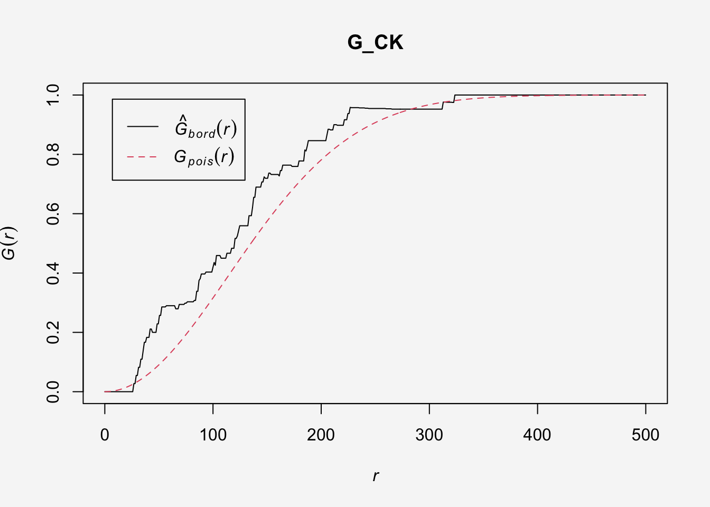
Since the observed G-function rises faster than expected under CSR, it means that points are closer together than expected, suggesting a clustered spatial pattern. However, we still need further test to conclude if it’s clustered.
5.1.1.2 Performing Complete Spatial Randomness Test
To confirm the observed spatial patterns above, a hypothesis test will be conducted. The hypothesis and test are as follows:
- Ho = The distribution of childcare services at Choa Chu Kang are randomly distributed.
- H1= The distribution of childcare services at Choa Chu Kang are not randomly distributed.
- The null hypothesis will be rejected if p-value is smaller than alpha value of 0.001.
Monte Carlo test with G-fucntion:
G_CK.csr <- envelope(childcare_ck_ppp, Gest, nsim = 999)Generating 999 simulations of CSR ...
1, 2, 3, ......10.........20.........30.........40.........50.........60..
.......70.........80.........90.........100.........110.........120.........130
.........140.........150.........160.........170.........180.........190........
.200.........210.........220.........230.........240.........250.........260......
...270.........280.........290.........300.........310.........320.........330....
.....340.........350.........360.........370.........380.........390.........400..
.......410.........420.........430.........440.........450.........460.........470
.........480.........490.........500.........510.........520.........530........
.540.........550.........560.........570.........580.........590.........600......
...610.........620.........630.........640.........650.........660.........670....
.....680.........690.........700.........710.........720.........730.........740..
.......750.........760.........770.........780.........790.........800.........810
.........820.........830.........840.........850.........860.........870........
.880.........890.........900.........910.........920.........930.........940......
...950.........960.........970.........980.........990........
999.
Done.par(bg = "#f6f6f6")
plot(G_CK.csr)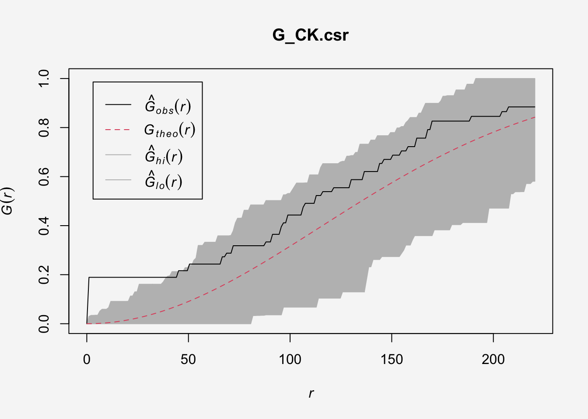
5.1.2 Tampines planning area
5.1.2.1 Computing G-function estimation
G_tm = Gest(childcare_tm_ppp, correction = "best")
par(bg = "#f6f6f6")
plot(G_tm)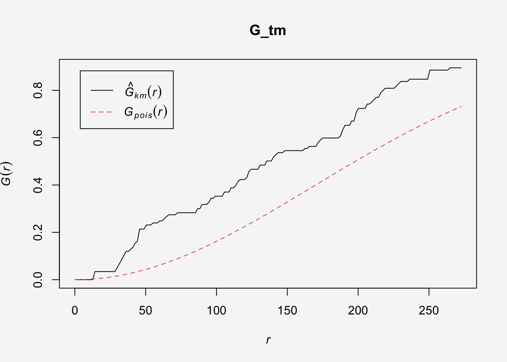
5.1.2.2 Performing Complete Spatial Randomness Test
To confirm the observed spatial patterns above, a hypothesis test will be conducted. The hypothesis and test are as follows:
- Ho = The distribution of childcare services at Tampines are randomly distributed.
- H1= The distribution of childcare services at Tampines are not randomly distributed.
- The null hypothesis will be rejected is p-value is smaller than alpha value of 0.001.
The code chunk below is used to perform the hypothesis testing:
G_tm.csr <- envelope(childcare_tm_ppp, Gest, correction = "all", nsim = 999)Generating 999 simulations of CSR ...
1, 2, 3, ......10.........20.........30.........40.........50.........60..
.......70.........80.........90.........100.........110.........120.........130
.........140.........150.........160.........170.........180.........190........
.200.........210.........220.........230.........240.........250.........260......
...270.........280.........290.........300.........310.........320.........330....
.....340.........350.........360.........370.........380.........390.........400..
.......410.........420.........430.........440.........450.........460.........470
.........480.........490.........500.........510.........520.........530........
.540.........550.........560.........570.........580.........590.........600......
...610.........620.........630.........640.........650.........660.........670....
.....680.........690.........700.........710.........720.........730.........740..
.......750.........760.........770.........780.........790.........800.........810
.........820.........830.........840.........850.........860.........870........
.880.........890.........900.........910.........920.........930.........940......
...950.........960.........970.........980.........990........
999.
Done.par(bg = "#f6f6f6")
plot(G_tm.csr)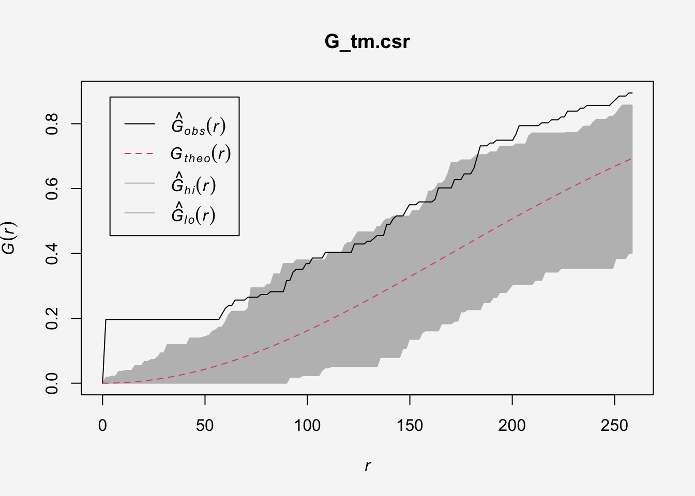
5.2 Analysing Spatial Point Process Using F-Function
The F function estimates the empty space function F(r) or its hazard rate h(r) from a point pattern in a window of arbitrary shape. In this section, you will learn how to compute F-function estimation by using Fest() of spatstat package. You will also learn how to perform monta carlo simulation test using envelope() of spatstat package.
5.2.1 Choa Chu Kang planning area
5.2.1.1 Computing F-function estimation
The code chunk below is used to compute F-function using Fest() of spatat package.
F_CK = Fest(childcare_ck_ppp)
par(bg = "#f6f6f6")
plot(F_CK)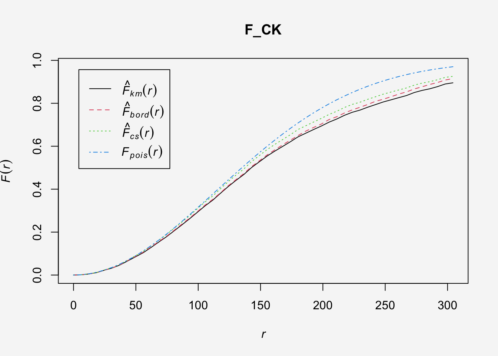
5.2.1.2 Performing Complete Spatial Randomness Test
To confirm the observed spatial patterns above, a hypothesis test will be conducted. The hypothesis and test are as follows:
- Ho = The distribution of childcare services at Choa Chu Kang are randomly distributed.
- H1= The distribution of childcare services at Choa Chu Kang are not randomly distributed.
- The null hypothesis will be rejected if p-value is smaller than alpha value of 0.001.
Monte Carlo test with F-fucntion:
F_CK.csr <- envelope(childcare_ck_ppp, Fest, nsim = 999)Generating 999 simulations of CSR ...
1, 2, 3, ......10.........20.........30.........40.........50.........60..
.......70.........80.........90.........100.........110.........120.........130
.........140.........150.........160.........170.........180.........190........
.200.........210.........220.........230.........240.........250.........260......
...270.........280.........290.........300.........310.........320.........330....
.....340.........350.........360.........370.........380.........390.........400..
.......410.........420.........430.........440.........450.........460.........470
.........480.........490.........500.........510.........520.........530........
.540.........550.........560.........570.........580.........590.........600......
...610.........620.........630.........640.........650.........660.........670....
.....680.........690.........700.........710.........720.........730.........740..
.......750.........760.........770.........780.........790.........800.........810
.........820.........830.........840.........850.........860.........870........
.880.........890.........900.........910.........920.........930.........940......
...950.........960.........970.........980.........990........
999.
Done.par(bg = "#f6f6f6")
plot(F_CK.csr)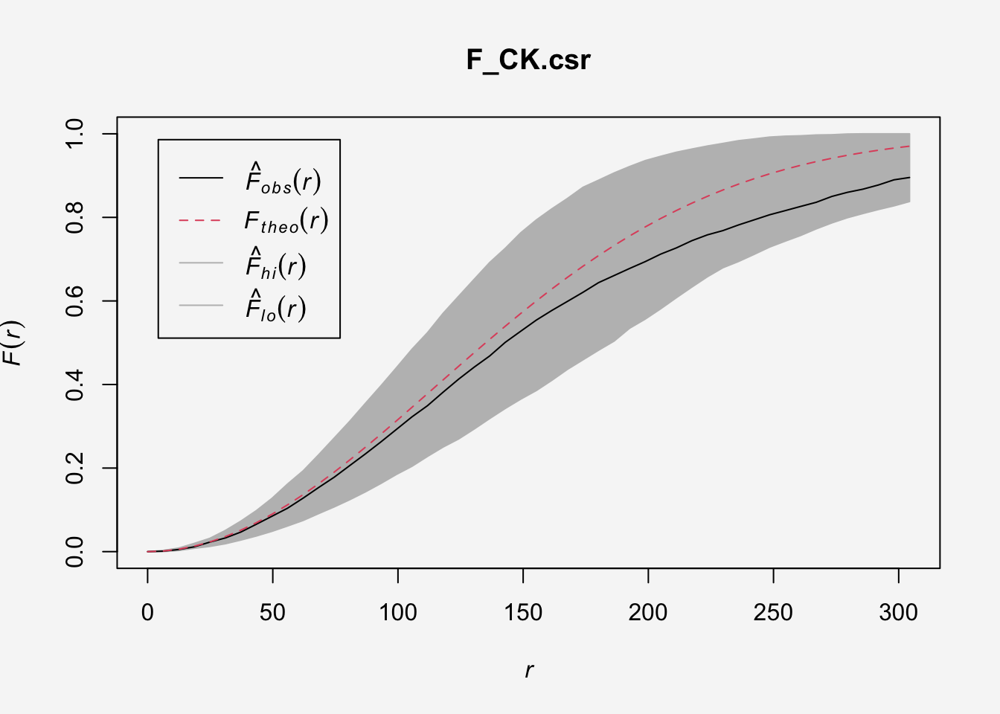
5.2.2 Tampines planning area
5.2.2.1 Computing F-function estimation
F_tm = Fest(childcare_tm_ppp, correction = "best")
par(bg = "#f6f6f6")
plot(F_tm)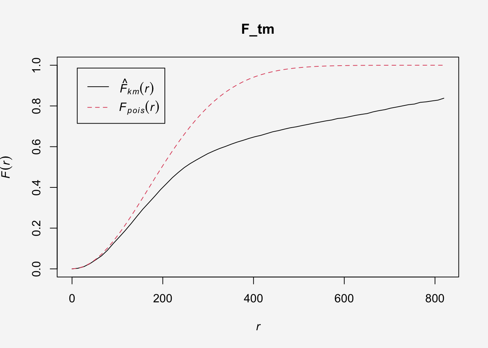
5.2.2.2 Performing Complete Spatial Randomness Test
To confirm the observed spatial patterns above, a hypothesis test will be conducted. The hypothesis and test are as follows:
- Ho = The distribution of childcare services at Tampines are randomly distributed.
- H1= The distribution of childcare services at Tampines are not randomly distributed.
- The null hypothesis will be rejected is p-value is smaller than alpha value of 0.001.
The code chunk below is used to perform the hypothesis testing:
F_tm.csr <- envelope(childcare_tm_ppp, Fest, correction = "all", nsim = 999)Generating 999 simulations of CSR ...
1, 2, 3, ......10.........20.........30.........40.........50.........60..
.......70.........80.........90.........100.........110.........120.........130
.........140.........150.........160.........170.........180.........190........
.200.........210.........220.........230.........240.........250.........260......
...270.........280.........290.........300.........310.........320.........330....
.....340.........350.........360.........370.........380.........390.........400..
.......410.........420.........430.........440.........450.........460.........470
.........480.........490.........500.........510.........520.........530........
.540.........550.........560.........570.........580.........590.........600......
...610.........620.........630.........640.........650.........660.........670....
.....680.........690.........700.........710.........720.........730.........740..
.......750.........760.........770.........780.........790.........800.........810
.........820.........830.........840.........850.........860.........870........
.880.........890.........900.........910.........920.........930.........940......
...950.........960.........970.........980.........990........
999.
Done.par(bg = "#f6f6f6")
plot(F_tm.csr)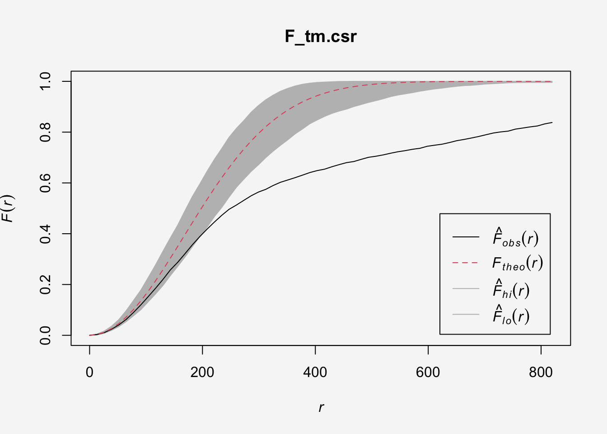
5.3 Analysing Spatial Point Process Using K-Function
The K-function measures the number of events found up to a given distance of any particular event. In this section, you will learn how to compute K-function estimates by using Kest() of spatstatpackage. You will also learn how to perform monta carlo simulation test using envelope() of spatstat package.
5.3.1 Choa Chu Kang planning area
5.3.1.1 Computing K-function estimation
The code chunk below is used to compute K-function using Kest() of spatat package.
K_ck = Kest(childcare_ck_ppp, correction = "Ripley")
par(bg = "#f6f6f6")
plot(K_ck, . -r ~ r, ylab= "K(d)-r", xlab = "d(m)")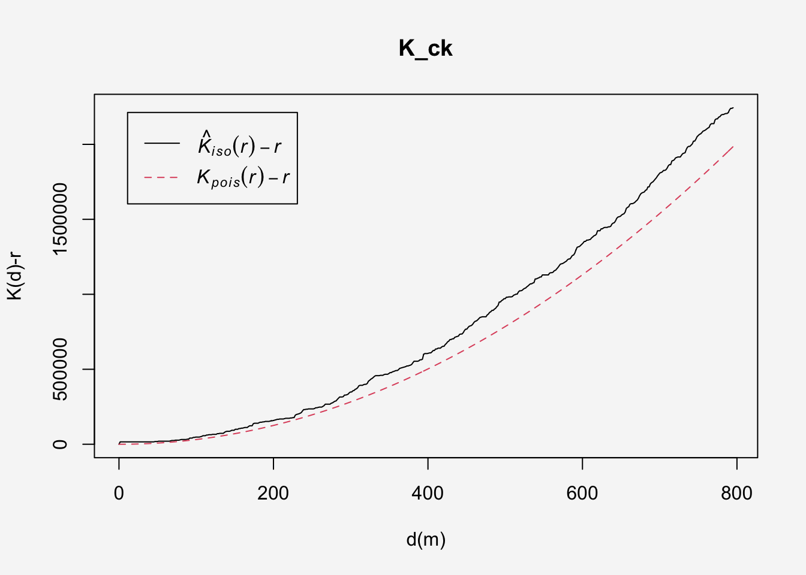
5.3.1.2 Performing Complete Spatial Randomness Test
To confirm the observed spatial patterns above, a hypothesis test will be conducted. The hypothesis and test are as follows:
- Ho = The distribution of childcare services at Choa Chu Kang are randomly distributed.
- H1= The distribution of childcare services at Choa Chu Kang are not randomly distributed.
- The null hypothesis will be rejected if p-value is smaller than alpha value of 0.001.
Monte Carlo test with F-fucntion:
K_ck.csr <- envelope(childcare_ck_ppp, Kest, nsim = 99, rank = 1, glocal=TRUE)Generating 99 simulations of CSR ...
1, 2, 3, 4, 5, 6, 7, 8, 9, 10, 11, 12, 13, 14, 15, 16, 17, 18, 19, 20,
21, 22, 23, 24, 25, 26, 27, 28, 29, 30, 31, 32, 33, 34, 35, 36, 37, 38, 39, 40,
41, 42, 43, 44, 45, 46, 47, 48, 49, 50, 51, 52, 53, 54, 55, 56, 57, 58, 59, 60,
61, 62, 63, 64, 65, 66, 67, 68, 69, 70, 71, 72, 73, 74, 75, 76, 77, 78, 79, 80,
81, 82, 83, 84, 85, 86, 87, 88, 89, 90, 91, 92, 93, 94, 95, 96, 97, 98,
99.
Done.par(bg = "#f6f6f6")
plot(K_ck.csr, . - r ~ r, xlab="d", ylab="K(d)-r")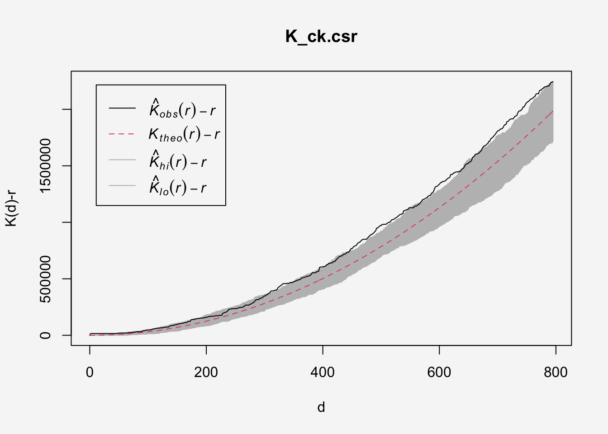
5.3.2 Tampines planning area
5.3.2.1 Computing K-function estimation
K_tm = Kest(childcare_tm_ppp, correction = "Ripley")
par(bg = "#f6f6f6")
plot(K_tm, . -r ~ r,
ylab= "K(d)-r", xlab = "d(m)",
xlim=c(0,1000))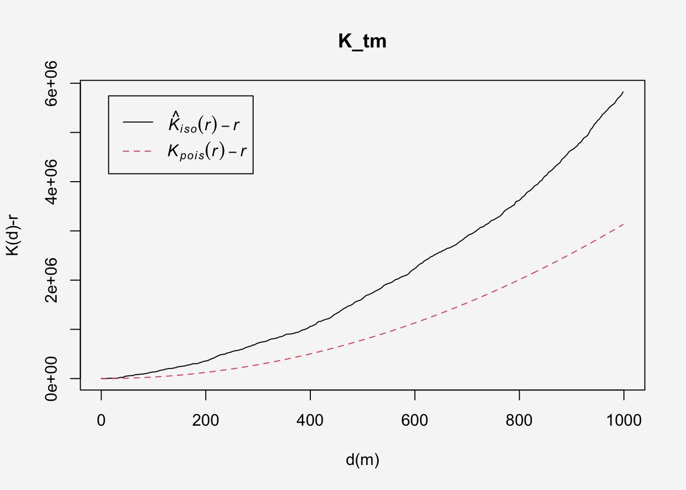
5.3.2.2 Performing Complete Spatial Randomness Test
To confirm the observed spatial patterns above, a hypothesis test will be conducted. The hypothesis and test are as follows:
- Ho = The distribution of childcare services at Tampines are randomly distributed.
- H1= The distribution of childcare services at Tampines are not randomly distributed.
- The null hypothesis will be rejected is p-value is smaller than alpha value of 0.001.
The code chunk below is used to perform the hypothesis testing:
K_tm.csr <- envelope(childcare_tm_ppp, Kest, nsim = 99, rank = 1, glocal=TRUE)Generating 99 simulations of CSR ...
1, 2, 3, 4, 5, 6, 7, 8, 9, 10, 11, 12, 13, 14, 15, 16, 17, 18, 19, 20,
21, 22, 23, 24, 25, 26, 27, 28, 29, 30, 31, 32, 33, 34, 35, 36, 37, 38, 39, 40,
41, 42, 43, 44, 45, 46, 47, 48, 49, 50, 51, 52, 53, 54, 55, 56, 57, 58, 59, 60,
61, 62, 63, 64, 65, 66, 67, 68, 69, 70, 71, 72, 73, 74, 75, 76, 77, 78, 79, 80,
81, 82, 83, 84, 85, 86, 87, 88, 89, 90, 91, 92, 93, 94, 95, 96, 97, 98,
99.
Done.par(bg = "#f6f6f6")
plot(K_tm.csr, . - r ~ r,
xlab="d", ylab="K(d)-r", xlim=c(0,500))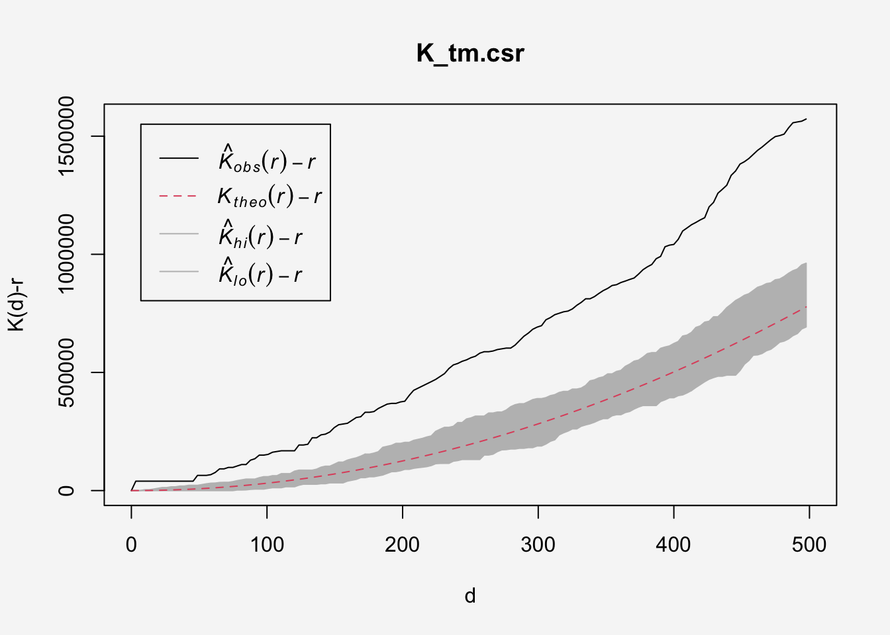
5.4 Analysing Spatial Point Process Using L-Function
In this section, we will learn how to compute L-function estimation by using Lest() of spatstat package. You will also learn how to perform monta carlo simulation test using envelope() of spatstat package.
5.4.1 Choa Chu Kang planning area
5.4.1.1 Computing L-function estimation
The code chunk below is used to compute K-function using Lest() of spatat package.
L_ck = Lest(childcare_ck_ppp, correction = "Ripley")
par(bg = "#f6f6f6")
plot(L_ck, . -r ~ r,
ylab= "L(d)-r", xlab = "d(m)")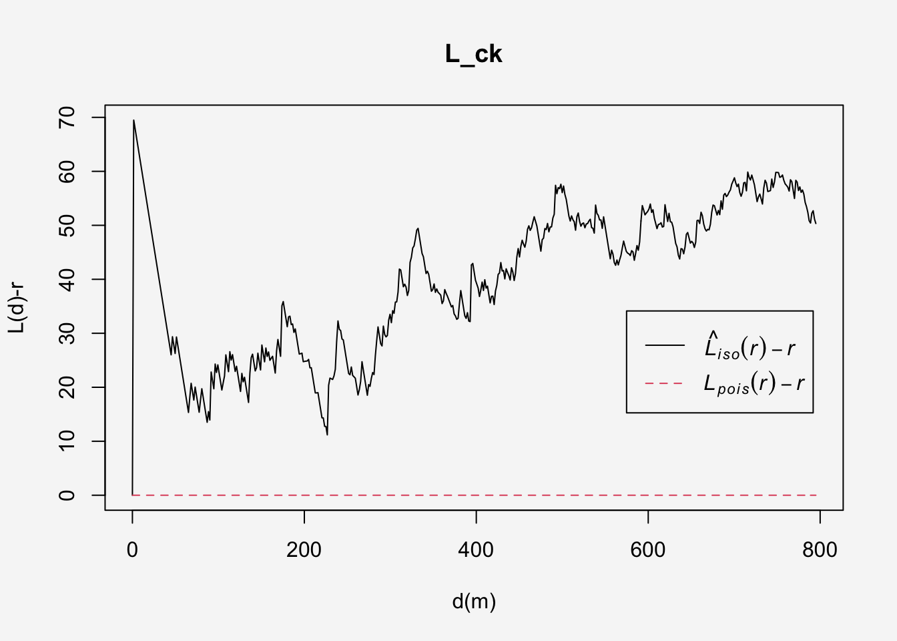
5.4.1.2 Performing Complete Spatial Randomness Test
To confirm the observed spatial patterns above, a hypothesis test will be conducted. The hypothesis and test are as follows:
- Ho = The distribution of childcare services at Choa Chu Kang are randomly distributed.
- H1= The distribution of childcare services at Choa Chu Kang are not randomly distributed.
- The null hypothesis will be rejected if p-value is smaller than alpha value of 0.001.
Monte Carlo test with F-fucntion:
L_ck.csr <- envelope(childcare_ck_ppp, Lest, nsim = 99, rank = 1, glocal=TRUE)Generating 99 simulations of CSR ...
1, 2, 3, 4, 5, 6, 7, 8, 9, 10, 11, 12, 13, 14, 15, 16, 17, 18, 19, 20,
21, 22, 23, 24, 25, 26, 27, 28, 29, 30, 31, 32, 33, 34, 35, 36, 37, 38, 39, 40,
41, 42, 43, 44, 45, 46, 47, 48, 49, 50, 51, 52, 53, 54, 55, 56, 57, 58, 59, 60,
61, 62, 63, 64, 65, 66, 67, 68, 69, 70, 71, 72, 73, 74, 75, 76, 77, 78, 79, 80,
81, 82, 83, 84, 85, 86, 87, 88, 89, 90, 91, 92, 93, 94, 95, 96, 97, 98,
99.
Done.par(bg = "#f6f6f6")
plot(L_ck.csr, . - r ~ r, xlab="d", ylab="L(d)-r")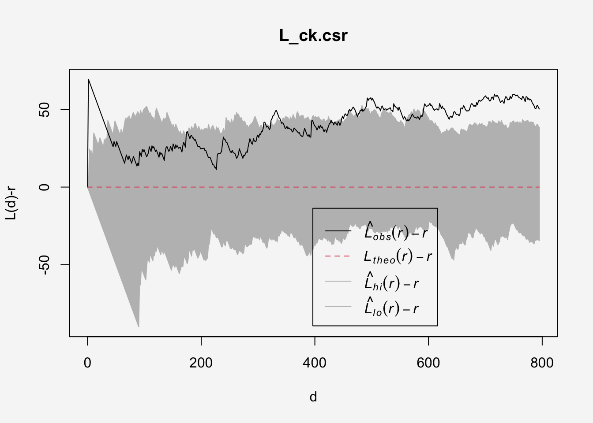
5.4.2 Tampines planning area
5.4.2.1 Computing L-function estimation
L_tm = Lest(childcare_tm_ppp, correction = "Ripley")
par(bg = "#f6f6f6")
plot(L_tm, . -r ~ r,
ylab= "L(d)-r", xlab = "d(m)",
xlim=c(0,1000))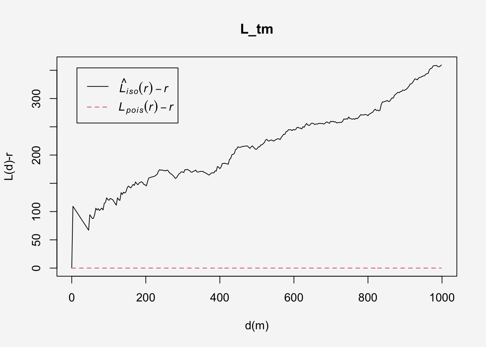
5.4.2.2 Performing Complete Spatial Randomness Test
To confirm the observed spatial patterns above, a hypothesis test will be conducted. The hypothesis and test are as follows:
- Ho = The distribution of childcare services at Tampines are randomly distributed.
- H1= The distribution of childcare services at Tampines are not randomly distributed.
- The null hypothesis will be rejected is p-value is smaller than alpha value of 0.001.
The code chunk below is used to perform the hypothesis testing:
L_tm.csr <- envelope(childcare_tm_ppp, Lest, nsim = 99, rank = 1, glocal=TRUE)Generating 99 simulations of CSR ...
1, 2, 3, 4, 5, 6, 7, 8, 9, 10, 11, 12, 13, 14, 15, 16, 17, 18, 19, 20,
21, 22, 23, 24, 25, 26, 27, 28, 29, 30, 31, 32, 33, 34, 35, 36, 37, 38, 39, 40,
41, 42, 43, 44, 45, 46, 47, 48, 49, 50, 51, 52, 53, 54, 55, 56, 57, 58, 59, 60,
61, 62, 63, 64, 65, 66, 67, 68, 69, 70, 71, 72, 73, 74, 75, 76, 77, 78, 79, 80,
81, 82, 83, 84, 85, 86, 87, 88, 89, 90, 91, 92, 93, 94, 95, 96, 97, 98,
99.
Done.par(bg = "#f6f6f6")
plot(L_tm.csr, . - r ~ r,
xlab="d", ylab="L(d)-r", xlim=c(0,500))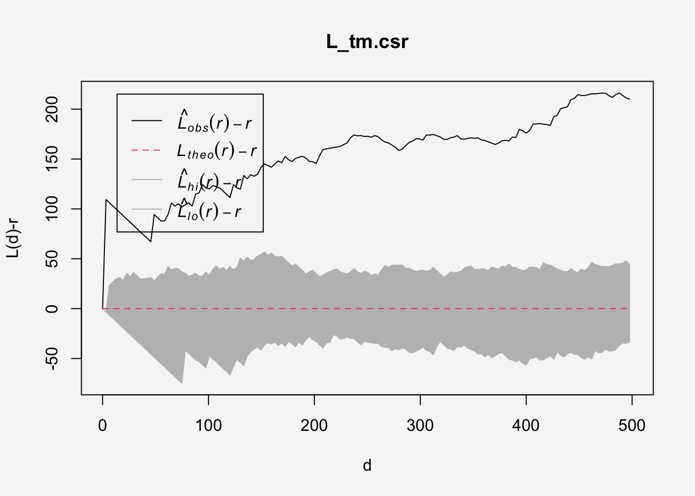
Tampines form clusters around 50m. However, CK forms cluster
6 Reference
- Kam, T.S. (2025). 2nd Order Spatial Point Patterns Analysis Methods